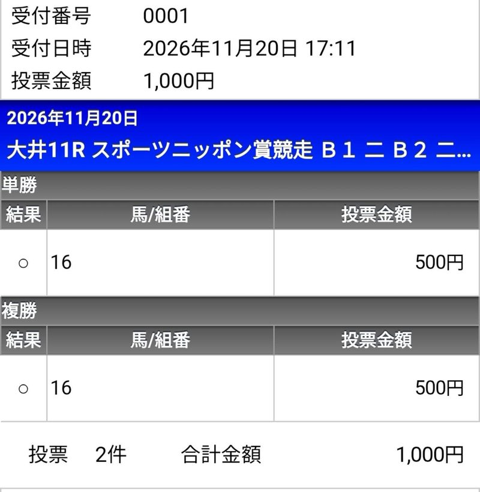

前日成績
11/19 大井10R 神明坂賞 ◎7 ニジコは12着でした。不的中で、1,000円→0円です。1着は11番ケイアイエルナトでした。移籍初戦は大差負けで不発でした。
前日のその他の予想の結果（予想だけ・買っていません）
大井9R ◎8 イマーシブは1着でした（仮想払戻3,200円）。大井11R ローズベール賞 ◎3 ジュンウィンダムは7着でした（仮想払戻0円）。
予想だけの累計：4レース・的中3レース 仮想購入4,000円→仮想払戻5,450円 仮想回収率136.3%（本年成績には含みません）
当日予想
2026/11/20(金) 大井11R スポーツニッポン賞（B1二B2二選抜特別）
20:10発走、ダート1600mです。
◎16 プレストアーサー 吉井章
１６ 単勝 ５００円
１６ 複勝 ５００円
大井1600mで5勝を挙げており、同条件は吉井章騎乗で1着・1着・3着と、実績はこのメンバーで最上位級です。前走7着は鞍上が安藤洋に替わり、不良馬場で失速したもので、敗因ははっきりしています。今回は主戦の吉井章に鞍上が戻ります。前走で人気を落とした分だけ妙味のある1頭です。

＜本年成績＞
中央 213戦26勝 291,400円→181,380円 -110,020円 62%
地方 13戦4勝 13,000円→14,750円 +1,750円 113%
合計 226戦30勝 304,400円→196,130円 -108,270円 64%
払戻"金"投資 108,020円→92,487円 -15,533円 -14.38%
その他の予想（予想だけ・買っていません）
大井10R 黄葉特別（C1選抜）19:30発走、ダート1200m
◎11 ポアゾンノアール 本田重 単勝 ５００円／複勝 ５００円（仮想）
大井1200mは3勝・2着2回・3着1回と距離実績が抜群です。近走も1400mで3着・3着・2着・3着と堅実で、山中悠から本田重への鞍上強化も後押しです。
大井12R 神楽月賞（B2三選抜特別）20:50発走、ダート1400m
◎10 ホワイトマジック 張田昂 単勝 ５００円／複勝 ５００円（仮想）
近5走すべて3着以内（大井1400mで3着・2着、1200mで2着・1着・1着）で、通算10勝の実力馬です。同条件なら人気以上の走りが期待できます。